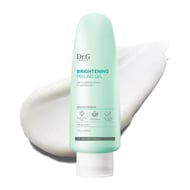

무엇이 한국 스킨케어를 그토록 효율적으로 만드는가?

한국 스킨케어는 피부에 맞게 만들어졌기 때문에 너무 좋아요. 세계에서 가장 까다로운 스킨케어 시장, 그리고 대한민국 No.1 스킨케어 브랜드 닥터지*, 그 안에서 자랐습니다. 한국 쇼핑객들은 모든 공식을 공개적으로 테스트하고 평가하며 순위를 매깁니다. 따라서 브랜드는 피부 장벽을 중심으로 진정 성분을 우선으로 하고 사람들이 하루에 두 번 바르고 싶어하는 가벼운 질감을 중심으로 구축됩니다. 그런 다음 연간 순위, 임상 테스트 및 피부 연구를 통해 이를 입증합니다. 닥터지는 클리닉 태생, 작성자: 서울피부과 안건영 원장, 각질 제거부터 데일리 선케어까지 모든 단계를 커버합니다.
01.
한국 스킨케어 시장이 그토록 까다로운 이유
한국은 세계에서 평균적인 크림을 판매하기 가장 어려운 곳 중 하나입니다.. 쇼핑객들은 국내 최고의 뷰티 소매업체인 올리브영에서 직접 질감을 테스트하고, 전국 리뷰 플랫폼인 화해에서 공개적으로 포뮬러를 평가하며, 카테고리 순위가 매년 재설정되는 것을 지켜봅니다. 기름기가 느껴지거나 찌르거나 전달되지 않는 포뮬러는 한 시즌 동안 거의 지속되지 않습니다.
그 압력은 브랜드가 구축하는 것을 변화시킵니다. 질감이 가벼워짐, 쇼핑객은 끈적거리는 것을 거부하기 때문입니다. 공식이 더 부드러워짐, 자극적인 제품은 반품 및 리뷰를 받기 때문이죠. 재구성이 더 빠르게 진행됩니다., 작년 순위가 올해 매출을 보호하지 못하기 때문입니다.
한국에서 살아남는 것은 사람들이 계속해서 재구매하는 것이고, 그 증거는 이제 여행을 하고 있습니다. 2025년 미국인들은 K-뷰티에 20억 달러를 지출했는데, 이는 2년 만에 122% 증가한 수치입니다. [6].
02.
한국 스킨케어는 왜 제형이 좋은 걸까요?
한국 스킨케어는 제형부터 바르기 시작해서 제형이 너무 좋아요. 피부 장벽 나중에 활성 항목을 추가합니다. 진정 성분이 우선이고, 질감이 가벼우며, 레티놀 및 살리실산과 같은 강력한 활성제는 건조 문제 때문에 많은 미국 제품보다 더 적게 사용됩니다. [5]. 자주 보게 될 성분들입니다.
- 시카
- 하트리프
- 쑥
- 판테놀
- 나이아신아마이드
목록이 진정되는 데에는 그럴 만한 이유가 있습니다. 에 대한 71%의 사람들이 피부가 민감하다고 보고합니다. 어느 정도 [1].
시카트리테르펜은 피부 진정 반응 및 피부 장벽 지원과 관련이 있습니다. [3], 그리고 나이아신아마이드 연구원들이 민감성 피부용 페이셜 제품의 활성 성분 순위를 매겼을 때 상위에 올랐습니다. [2].
진정 우선 순서는 테스트에서도 유지됩니다. 민감한 피부를 가진 88명의 여성을 대상으로 한 4주간의 연구에서 시카 추출물, 세라마이드 NP 및 판테놀을 결합한 크림은 민감성 피부 점수를 2주차에 66%, 4주차에 76% 감소시켰습니다. [4].
한국 보습제 또한 그런 경향이 있다 질감이 더 가벼움 [5], 하루에 두 번 사용하면 쉽게 유지할 수 있습니다.
03.
한국 브랜드가 성과를 입증하는 방법
한국 브랜드는 대중과 연구실에서 그 결과를 입증합니다. 올리브 영 어워드(Olive Young Awards)와 같은 연간 순위는 쇼핑객이 무엇을 다시 구매하는지 보여주며, 임상 테스트 및 피부 연구는 그것이 효과가 있는 이유를 보여줍니다.
모회사인 고운세상화장품이 자체적으로 피부과학연구소를 운영하고 있는 닥터지의 사례는 그 정도가 어디까지인지를 보여주는 단적인 예이다.
AI 피부분석 서비스가 모였다 약 10년 간 50만 건 이상의 피부 기록 보유, 수분부터 민감도까지 6가지 지표 측정 [7]. 모든 제품은 출시 전 자극 및 효능 테스트를 거치며 민감한 피부에 대한 추가 테스트를 거칩니다. 강력한 활성 성분이 보다 부드러운 캐리어에 캡슐화되어 피부가 따가움 없이 효능을 얻을 수 있습니다. [8]. 연구도 진행 중이다.
닥터지 과학자들은 2024년 브라질에서 개최되는 세계 화장품 화학자 모임인 IFSCC 총회에서 포스터를 발표했습니다. [9] 그리고 2025년 칸에서는 [10].
한국의 쇼핑객은 결과를 확인하므로 브랜드는 확인할 사항이 있는지 확인합니다.
04.
닥터지 한국 스킨케어 제품군
닥터지 한국 스킨케어 제품군은 준비, 진정, 보호의 세 가지 일일 단계와 천천히 노화되는 크림으로 구성되어 있습니다. 각 영웅은 한국 No.1 페이셜 크림 브랜드에서 한국 카테고리를 선도합니다.** 대한민국 No.1 자외선 차단제 브랜드로***, 모든 공식은 장벽에서 시작됩니다.
전체 표를 보려면 스와이프하세요 →
 |
 |
 |
 |
|
| 기준 | 브라이트닝 필링젤 | R.E.D 블레미쉬 클리어 수딩 크림 | 그린 드래곤 선 플러스 SPF50+ PA++++ | 블랙스네일 크림 |
|---|---|---|---|---|
| 순위 | 올리브영 어워드 페이셜 스크럽 부문 1위 | 국내 No.1 페이셜 크림 브랜드** | 국내 No.1 자외선 차단제 브랜드*** | 3300만개 판매 |
| 피부 고민 | 민감한 피부를 포함하여 칙칙함과 거친 질감. | 발적, 발진 및 반응성 피부. | 민감한 피부를 포함하여 매일 UV 노출. | 탄력과 윤기가 사라집니다. |
| 효능 | 피부과 스케일링 시술과 유사하게 각질을 부드럽게 제거하여 수분을 강화하고 트러블을 완화시켜줍니다. | 닥터지 '진정의 힘'의 핵심 원리인 수분 보충과 피부 장벽 강화. | 유해한 자외선과 환경 손상으로부터 피부를 보호합니다. | 피부가 더욱 탄탄해 보이고 내면의 윤기가 나도록 지원하여 노화를 늦춥니다. |
| 성분 | 비산성 제형의 면 셀룰로오스. | 10 시카 콤플렉스, 10가지 보완 진정 활성 성분. | 아연과 엑토인 D가 함유된 100% 순수 미네랄 UV 필터입니다. | 블랙스네일 뮤신. |
또한 읽어보세요 대한민국 No.1 스킨케어 브랜드
또한 읽어보세요 준비, 진정, 보호 루틴
05.
루틴 쇼핑하기
준비, 달래기, 보호: 의사의 세 가지 단계를 일상적인 순서로 진행합니다.
- 1단계. 준비 – 브라이트닝 필링젤: 주 1~2회.
- 2단계. 진정시키기 – R.E.D 블레미쉬 클리어 수딩 크림: 아침 저녁.
- 3단계. 보호 – 그린 드래곤 선 플러스 SPF50+ PA++++: 매일 아침.


06.
메모 및 출처
* 국내 No.1 스킨케어 브랜드: Worldpanel by Numerator(구 Kantar Korea), 패널 연구, 2020.03.23~2025.03.23, 한국 침투 기준.
** 크림 부문 올리브영 어워드; 닥터지 브랜드 참조(NBB 브리핑, 2026년 7월).
*** 올리브영 선케어 부문; 닥터지 브랜드 참조(NBB 브리핑, 2026년 7월).
‡ 그린 드래곤 선 플러스 SPF50+ PA++++, 민감성 피부 테스트 수행: 피부과, 비면포성, 민감성 피부, 저자극성, 눈 자극, 소아 및 피부과 절차 자극 테스트. 닥터지 임상 테스트 데이터, 파일.
[1] Chen과 동료들은 18개국에서 51,783명을 대상으로 한 26개 연구에 대한 메타 분석을 실시했습니다.
[2] Ferreira와 동료들은 19개 다국적 브랜드의 88개 민감성 피부용 제품에서 활성 성분의 순위를 매겼습니다.
[3] Sherban과 Wang은 센텔라 아시아티카에 대해 발표된 연구에 대한 리뷰입니다. 닥터지 공식을 테스트하지 않았습니다.
[4] Su와 동료: Galderma가 자금을 지원하는 전향적 관찰 연구. 테스트한 포뮬러는 닥터지 포뮬러가 아닌 타사 제품입니다.
동료 검토 연구
- [1] 첸 W, 다이 R, 리 L. 자칭 민감성 피부의 유병률: 체계적 검토 및 메타 분석. 유럽 피부과 및 성병학 학회지. 2020;34(8):1779-1788. doi:10.1111/jdv.16166
- [2] 페레이라 MS, 소사 로보 JM, 알메이다 IF. 민감한 피부: 주목받는 활성 성분. 국제 화장품 과학 저널. 2022;44(1):56-73. doi:10.1111/ics.12754
- [3] Sherban A, 왕 JV. 스킨케어 제제에서 시카(센텔라 아시아티카)의 역할: 인기 있는 성분에 대한 조사. 스킨메드. 2022;20(2):94-96. PMID 35532760
- [4] Su Z, Zheng Y, Yi J, Lai W, 예 C. 센텔라아시아티카잎추출물, 세라마이드NP, 판테놀을 함유한 스킨케어 제품의 민감성 피부를 대상으로 한 스킨케어 제품의 효과와 안전성: 전향적 관찰 연구. 미용 피부과 저널. 2025;24(7):e70324. doi:10.1111/jocd.70324
언론 및 업계 보도
- [5] 매력, 가볍고 오래 지속되는 수분 공급을 위한 11가지 최고의 한국 보습제, 2026년 2월 6일.
- [6] 오늘, K-뷰티 트렌드는 정말 모든 기대를 모을 만한 가치가 있나요?, 2025년 12월 11일.
- [7] 시장경제뉴스, 닥터지 AI 피부 분석 서비스 특집, 2025년 4월 29일.
- [8] 엘르코리아, 닥터지는 어떻게 No.1 스킨케어 브랜드가 되었나?, 2026년 2월 12일.
- [9] 위키트리, 고운세상화장품, 2024년 R&D본부 연구성과 발표, 2024년 12월 12일
- [10] 비욘드 포스트, 닥터지, 2025년 10월 9일 제35차 IFSCC 총회 2025에서 포스터 발표.